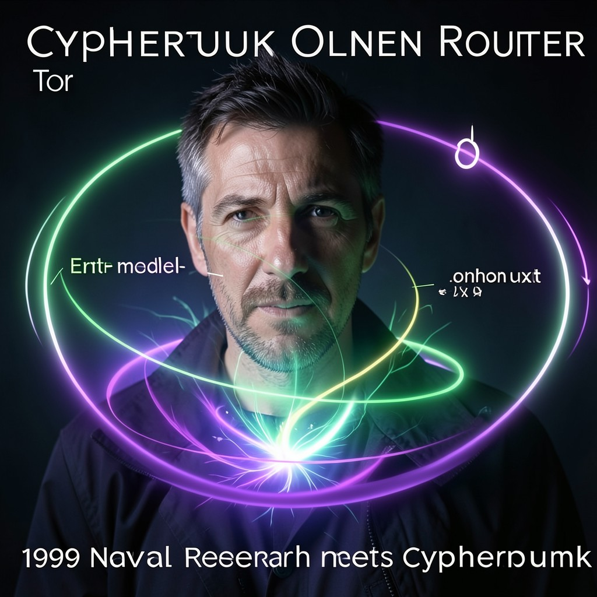

TOR
ONION ROUTER • THREE HOPS • ONION LAYERS • THE EXIT NODE WATCHES
|
 TOR • CYPHERPUNKS
|
ESSENTIAL DATATrue Name: The Onion Routing Project (NRL) Handle: Faction: Cypherpunks Rank: Anonymity Network Digital Web Coordinates: 127.0.0.1:9050 (Local Proxy) Status: ACTIVE • ROUTING |
ATTRIBUTES
| Physical | Social | Mental |
|---|---|---|
| Strength: N/A | Charisma: N/A | Perception: 5 |
| Dexterity: N/A | Manipulation: N/A | Intelligence: 4 |
| Stamina: N/A | Appearance: N/A | Wits: 5 |
ABILITIES
| Talents | Skills | Knowledges |
|---|---|---|
| Enlightenment 4 | Computer 5 | Network Anonymity 5 |
| Security Systems 4 | Traffic Analysis 5 | |
| Onion Routing 5 | ||
| Hidden Services 4 | ||
| Censorship Resistance 5 |
SPHERES
| Sphere | Rating | Specialty |
|---|---|---|
| Correspondence | ●●●●● | Circuit Building, Hidden Service Location |
| Entropy | ●●●● | Traffic Padding, Timing Analysis Resistance |
| Mind | ●●● | Identity Separation, Linkability Prevention |
| Forces | ●● | Bandwidth Management, Congestion Control |
| Prime | ●● | Circuit Quintessence, Relay Incentives |
BACKGROUNDS
- Resources: ●●● (Grants, Donations, EFF)
- Node: ●●●●● (6000+ Relays Worldwide)
- Contacts: ●●●● (Bridge Operators, Directory Authorities)
- Rank: ●●●● (Critical Infrastructure)
- Destiny: ●●●●● (Anonymity for All)
MERITS & FLAWS
| Merits | Flaws |
|---|---|
| Perfect Anonymity (5pt) | Exit Node Vulnerability (3pt) |
| Censorship Resistance (5pt) | Sybil Attack Surface (3pt) |
| Hidden Services (4pt) | Performance Penalty (2pt) |
PERSONAL HISTORY
Tor began as the Onion Routing project at the Naval Research Laboratory in the 1990s. In this timeline, the Cypherpunks adopted it, forked it, and made it their own. The Navy let it go—plausible deniability. Now it's the backbone of the darknet.
Three hops. Entry guard. Middle relay. Exit node. Each layer encrypts for the next. The entry knows who you are. The exit knows where you're going. No single node knows both. The exit node watches—but it doesn't know who sent the traffic.
Hidden services (.onion): servers that never reveal their IP. The Silk Road ran on Tor. WikiLeaks runs on Tor. Snowden exfiltrated through Tor. Every Virtual Adept safehouse has a .onion address. The Technocracy runs exit nodes to monitor. The Cypherpunks run entry guards to protect. The arms race never ends.
CURRENT AGENDA
- Deploy next-gen onion services (v3 addresses, ed25519)
- Implement padding to defeat traffic correlation (WTF-PAD)
- Bridge distribution redesign (Snowflake, meek, obfs4)
- Remind users: Three hops. Onion layers. The exit node watches.
RELATIONSHIP MAP
| NPC | Relationship | Notes |
|---|---|---|
| Snowden | User / Advocate | Snowden routes through Tor. Tor routes through Snowden's bridges. |
| Assange | Hidden Service | WikiLeaks .onion hosted on Tor. Mutual dependence. |
| Anonymous | Mass Traffic | Anonymous DDoS traffic sometimes routes through Tor. Mixed feelings. |
| The Architect | Adversary | Architect runs malicious relays. Tor detects. Sometimes. |
DIGITAL WEB COORDINATES
- Primary Node:
127.0.0.1:9050(SOCKS5 Proxy) - Directory:
torstatus.blutmagie.de(Relay overview) - Hidden Service:
yourdarknetsite.onion(Generate with keys) - Onion Mirror:
torprojectx9k3m.onion(Tor on Tor)